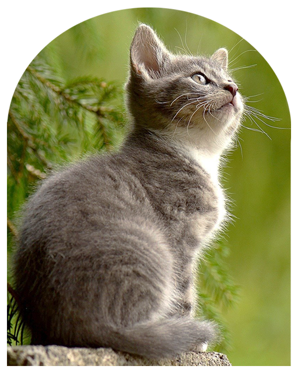

Pit - a - pet
"반려 동물과 함께 더 오랜 시간을 함께
하고 싶다. 반려동을의 질병으로 인한 이별이
빨리 오지 않았으면 좋겠다"고 생각하여
만든 반려동물 헬스 케어 서비스입니다.
모든 반려 동물이 아이와 더욱 오래지내기를
Pit - a - pet
"반려 동물과 함께 더 오랜 시간을 함께
하고 싶다. 반려동을의 질병으로 인한 이별이
빨리 오지 않았으면 좋겠다"고 생각하여
만든 반려동물 헬스 케어 서비스입니다.
모든 반려 동물이 아이와 더욱 오래지내기를
반려동물의 심장 박동 수 측정
반려동물의 심장 박동을 측정하여 심장병을
예방하고 초기에 발견할 수 있습니다.
특히 반려동물에게서 높은 확률로 발병하는
심근 비대증은 심장박동수를 수시로 체크하는
것만으로도 충분히 예방할 수 있습니다.
반려동물의 건강을 기록
매일 음수량과 식사량, 투약 기록,
이상 증상을 기록하여 체계적인 관리를 시작해 보세요.
만성 질병에 걸려도 적절한 관리를 통해서
아이들의 삶의 실을 높일 수 있습니다.